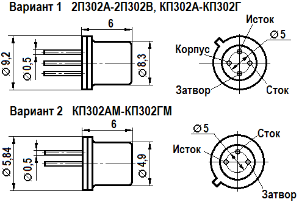

Транзистор КП302
Транзистор КП302 (КП302А, КП302Б, КП302В, КП302Г) - полевой с затвором на основе p-n перехода и каналом n-типа, планарный, кремниевый. Используется в коммутирующих и переключающих устройствах и в широкополосных усилителях. Предельный диапазон частот до 150 МГц. Имеет металлостеклянный корпус, выводы гибкие. На корпусе указывается тип транзистора. Масса не более 1,5 г.
КП302 выпускается в двух вариантах корпусов (рис. 1).

Рис. 1 - Размеры и цоколевка транзисторов КП302
Таблица 1
| Крутизна характеристики при Uси = 7 В, Uзи = 0, не менее: | |
| Т = -60 и +25°C: | |
| КП302А, КП302АМ, 2П302А | 5 мА/В |
| КП302Б, КП302БМ, 2П302Б, КП302Г, КП302ГМ | 7 мА/В |
| Т = +100°C: | |
| КП302А, КП302АМ | 2,5 мА/В |
| КП302Б, КП302БМ, КП302Г, КП302ГМ | 3 мА/В |
| Т = +125°C: | |
| 2П302А | 2,5 мА/В |
| 2П302Б | 3 мА/В |
| Коэффициент шума при Uси = 8 В, Uзи = 0, Rэ = 1 МОм, f = 1кГц для 2П302А | 0,6 дБ |
| Время включения при Uси = 10 В, Uзи = 0, не более | 4 нс |
| Время выключения при Uси = 10 В, Uзи = 0, не более | 5 нс |
| Сопротивление сток - исток в открытом состоянии при Uси = 0,2 В, Uзи = 0, не более: | |
| КП302Б, КП302БМ, 2П302Б, КП302Г, КП302ГМ | 150 Ом |
| КП302В, КП302ВМ | 100 Ом |
| при Т = -60 и +25°C для 2П302В | 100 Ом |
| при Т = +125°C для 2П302В | 200 Ом |
| Начальный ток стока при Uзи = 0: | |
| Uси = 7 В: | |
| КП302А, КП302АМ, 2П302А | 3...24 мА |
| КП302Б, КП302БМ, 2П302Б | 18...43 мА |
| КП302Г, КП302ГМ | 15...65 мА |
| Uси = 10 В: | |
| КП302В, КП302ВМ, 2П302В, не менее | 33 мА |
| Ток утечки затвора при Uзи = 10 В, не более: | |
| Т = -60 и +25°C | 10 нА |
| Т = +100°C КП302А, КП302АМ, КП302Б, КП302БМ, КП302В, КП302ВМ, КП302Г, КП302ГМ | 5 мкА |
| Т = +125°C 2П302А, 2П302Б, 2П302В | 50 мкА |
| Обратный ток перехода затвор - сток при Uзc = 20 В, не более | 1 мкА |
| Напряжение отсечки при Uси = 7 В, Iс = 10 мА, не более: | |
| КП302А, КП302АМ, 2П302А | 5 В |
| КП302Б, КП302БМ, 2П302Б, КП302Г, КП302ГМ | 7 В |
| КП302В, КП302ВМ, 2П302В | 10 В |
| Входная ёмкость, не более: | |
| при Uси = 10 В, f = 10 МГц, Iс = 3 мА для КП302А, КП302АМ, 2П302А | 20 пФ |
| при Iс = 8 мА для КП302Б, КП302БМ, 2П302Б | 20 пФ |
| при Iс = 33 мА для КП302В, КП302ВМ, 2П302В | 20 пФ |
| Проходная ёмкость, не более: | |
| при Uси = 10 В, f = 10 МГц, Iс = 3 мА для КП302А, КП302АМ, 2П302А | 8 пФ |
| при Iс = 8 мА для КП302Б, КП302БМ, 2П302Б | 8 пФ |
| при Iс = 33 мА для КП302ВМ, 2П302В | 8 пФ |
| при Iс = 18 мА для КП302Г, КП302ГМ | 8 пФ |
Таблица 2
| Напряжение сток - исток: | |
| КП302А, 2П302А, КП302Б, 2П302Б, КП302Г | 10 В |
| КП302АМ, КП302БМ, КП302ГМ | 12 В |
| Напряжение затвор - сток | 20 В |
| Напряжение сток - исток | 20 В |
| Ток стока (постоянный): | |
| КП302А, КП302АМ, 2П302А | 24 мА |
| КП302Б, КП302БМ, 2П302Б | 43 мА |
| Ток затвора (прямой) | 6 мА |
| Рассеиваемая мощность (постоянная) при Т ≤ +25°C | 300 мВт |
| Рабочая температура (окружающей среды): | |
| КП302А, КП302АМ, КП302Б, КП302БМ, КП302В, КП302ВМ, КП302Г, КП302ГМ | -60...+100°C |
| 2П302А, 2П302Б, 2П302В | -60...+125°C |
Источники
katod-anod.ru - Транзистор КП302: КП302А, КП302Б, КП302В, КП302Г